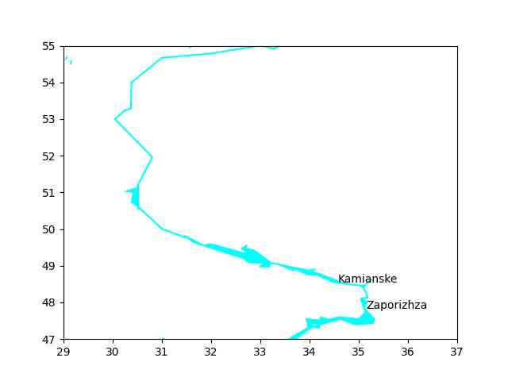

Haritalama, Nehirler, Göller
SHP dosyasi olarak farkli detaylarda nehirlerin, gollerin yerlerini gosteren veri dosyalar GSHHG verisinde bulunabilir. SHP dosyalarinin nasil islenecegini [2] yazisinda gormustuk. Su alanlari verisi tek bir zip [1] olarak indirilebilir, acilinca
GSHHS_shp
WDBII_shp
dizinleri görülür.
Nehirler WDBII_shp altında ve alt dizinler olarak c,i,f,h,l
mevcut. Bu alt dizinlerin kodlaması şöyle,
f: Tam çözünürlük. Verinin en ham, en detaylı hali bu dizin altında.
h: Yüksek çözünürlük. Douglas-Peucker çizgi indirgemesi
kullanılmştir, ve veri büyüklüğü ~80% oranında azaltılmıştır (bazı
detaylar kaybolmuştur doğal olarak).
i: Orta seviye çözünürlük. Bir önceki 'h' seviyesine göre yine ~80%
azaltma var.
l: Düşük çözünürlük: Önceki 'i' ye göre ~80% indirim
c: Kaba çözünürlük. Bir indirim daha, bu en düşük çözünürlük, en
küçük veri büyüklüğü burada.
Her dosya ismi `WDBIIriver<çözünürlük>_L
Seviye 1: Nehir-goller Seviye 2: Kalici, buyuk nehirler Seviye 3: Ek ana nehirler Seviye 4: Yine ekler Seviye 5: Kucuk boyuttaki nehirler Seviye 6: Ana ve gecici nehirler Seviye 7: Ana ve gecici nehirler - ekler Seviye 8: Ufak boyuttaki gecici nehirler Seviye 9: Buyuk kanallar Seviye 10: Ufak kanallar Seviye 11: Sulama kanallari
GSHHS
Seviye 1: Continental land masses and ocean islands, except Antarctica. Seviye 2: Lakes Seviye 3: Islands in lakes Seviye 4: Ponds in islands within lakes Seviye 5: Antarctica based on ice front boundary. Seviye 6: Antarctica based on grounding line boundary.
Gerekli detaylılık, bilgi tipine göre üstteki seçeneklerden herhangi biri devreye sokulabilir.
Bazı önemli notlar; bazen yaygın olarak 'nehir' olarak tanımlanan alanlar GSHHG için bu şekilde tanımlanmamış olabilir. Dışarıdan gözlenenler için birbiri ile bağlantılı çok geniş olmayan ve akıntısı olan şu öbekleri bağlantılı bir nehirdir, fakat bu şekilde grafikleme yaptığımızda, örnek olarak Ukrayna'daki Dniper nehrini alalım,
from pygeodesy.sphericalNvector import LatLon, perimeterOf, meanOf
import shapefile
data_dir = "/tmp"
lim = 2
def plot_rivers():
file = data_dir + "/WDBII_river_c_L02.shp"
rivers = []
sf = shapefile.Reader(file)
r = sf.records()
waters = sf.shapes()
for idx in range(len(waters)):
water = waters[idx]
bounds = list(water.parts) + [len(water.points)]
for (previous, current) in zip(bounds, bounds[1:]):
geo = [[x[1],x[0]] for x in water.points[previous:current]]
if len(geo) < lim: continue
latlons = [LatLon(a[0],a[1]) for a in geo]
per = np.round(perimeterOf(latlons, radius=6371),2)
mid = meanOf(latlons)
latlons = [[a.lat,a.lon] for a in latlons]
regarr = np.array(latlons)
plt.plot(regarr[:,1],regarr[:,0],color='cyan')
plot_rivers()
plt.text(35.1461994056707,47.82578151155012,"Zaporizhza")
plt.text(34.58240228690867,48.542927718410105,"Kamianske")
plt.xlim(29,37)
plt.ylim(47,55)
plt.savefig('su1.jpg',quality=30)
şuradaki gibi bir görüntü ortaya çıkacaktır. Ana nehirleri seçtik,
detay c seviyesi, kabaca olsa bile bir nehir görüntüsünün ortaya
çıkmasını bekledik, fakat olmadı. Burada eksik olan GSHHG verisinin
Dnieper'in bazı bölümlerini göl olarak kaydetmiş olmasıdır. O zaman
hem nehir hem göl grafiklemesi gerekir,
def plot_lakes():
file = data_dir + "/GSHHS_l_L2.shp"
rivers = []
sf = shapefile.Reader(file)
r = sf.records()
waters = sf.shapes()
for idx in range(len(waters)):
water = waters[idx]
bounds = list(water.parts) + [len(water.points)]
for (previous, current) in zip(bounds, bounds[1:]):
geo = [[x[1],x[0]] for x in water.points[previous:current]]
if len(geo) < lim: continue
latlons = [LatLon(a[0],a[1]) for a in geo]
per = np.round(perimeterOf(latlons, radius=6371),2)
mid = meanOf(latlons)
latlons = [[a.lat,a.lon] for a in latlons]
regarr = np.array(latlons)
plt.fill(regarr[:,1],regarr[:,0],color='cyan')
plot_rivers()
plot_lakes()
plt.text(35.1461994056707,47.82578151155012,"Zaporizhza")
plt.text(34.58240228690867,48.542927718410105,"Kamianske")
plt.xlim(29,37)
plt.ylim(47,55)
plt.savefig('/tmp/out2.jpg',quality=30)

Bu daha net bir nehir görüntüsü ortaya çıkardı.
Kaynaklar
[1] https://www.ngdc.noaa.gov/mgg/shorelines/data/gshhg/latest/
[2] ../../2020/02/haritalamak.html
Yukarı